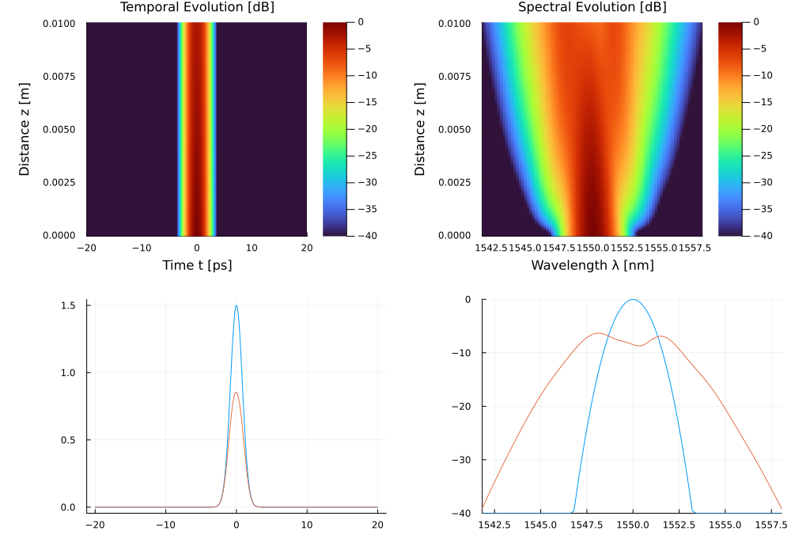

Example 8: Silicon Photonics (TPA & Free-Carrier Blue-Shift)
This example models non-linear pulse propagation in a Silicon-on-Insulator (SOI) nanowire, demonstrating Two-Photon Absorption (TPA) and Free-Carrier-induced spectral blue-shifting.
🔬 Literature Comparison & Physics
In sub-micron silicon photonic integrated circuits (PICs), intense optical pulses at 1550 nm experience strong Kerr self-phase modulation alongside Two-Photon Absorption ($\alpha_2 \approx 0.5\text{ cm/GW} = 5.0\times 10^{-12}\text{ m/W}$) and TPA-generated free carrier dynamics (L. Yin & G. P. Agrawal, Opt. Lett. 32, 2031 (2007)):
- Two-Photon Absorption (TPA): Non-linear attenuation scaling with $|A|^4 / A_{\text{eff}}$.
- Free-Carrier Refraction (FCR): Generated free electron-hole pairs decrease the refractive index ($n_{FC} = -k_{\text{FCR}} N_c$), shifting the pulse spectrum towards shorter wavelengths (blue-shift).
💻 Julia Code
using JuGNLSE
grid = create_grid(2^12, 40e-12, 1550e-9)
pulse = gaussian_pulse(grid, 1.5, 2.0e-12) # 1.5 W -> ~65% transmission (30 W over-depletes to ~8%)
soi = SemiconductorMedium(
length = 0.01, # 1 cm waveguide length
gamma = 300.0, # 300 /W/m Kerr parameter
alpha2 = 5.0e-12, # 0.5 cm/GW TPA parameter (5.0e-12 m/W)
Aeff = 0.1e-12, # 0.1 μm² effective modal area
tau_c = 1.0e-9, # 1 ns carrier recombination lifetime
betas = [-1000e-27], # anomalous dispersion
lambda0 = 1550e-9
)
sol = solve(pulse, SimParams(; medium=soi, raman_model=nothing, z_saves=100); progress=false)
println("TPA Non-linear Transmission: ", round(pulse_energy(Pulse(sol)) / pulse_energy(pulse) * 100, digits=1), "%")TPA Non-linear Transmission: 65.1%
📊 Expected Results
| Quantity | Value |
|---|---|
| TPA Nonlinear Transmission | 60–90% (power-dependent; lower for higher P₀) |
| FCR Spectral Blue-Shift | 1–5 nm (carrier-induced index decrease → blue) |
| Peak carrier density N_c | ~10¹³–10¹⁴ carriers/cm³ for P₀ ~30 W |
| Pulse temporal distortion | Trailing edge absorption (asymmetric) |
The TPA figure of merit (FOM) for silicon is $\text{FOM} = n_2 / (\alpha_2 \lambda) \approx 0.4$ at 1550 nm, below the threshold of 1 needed for net gain. This limits Silicon PICs for amplification but makes them excellent all-optical limiters.
References
L. Yin and G. P. Agrawal, "Impact of two-photon absorption on self-phase modulation in silicon waveguides," Opt. Lett. 32, 2031–2033 (2007). DOI: 10.1364/OL.32.002031
Q. Lin, O. J. Painter, and G. P. Agrawal, "Nonlinear optical phenomena in silicon waveguides," Opt. Express 15, 16604–16644 (2007). DOI: 10.1364/OE.15.016604